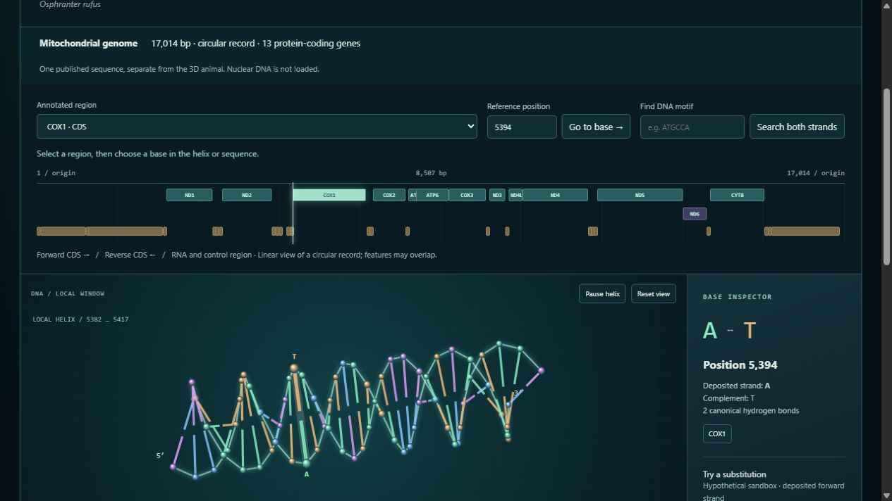
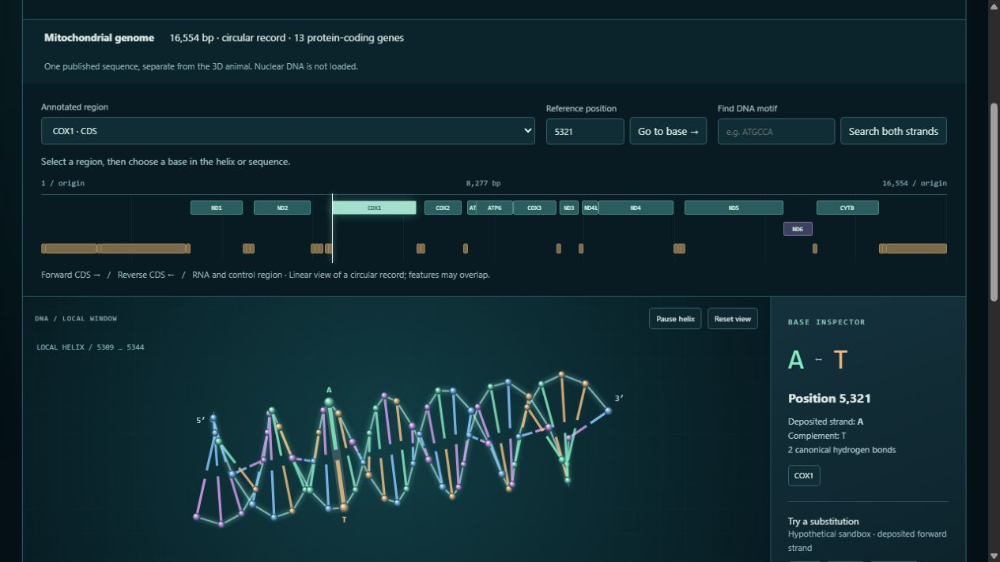
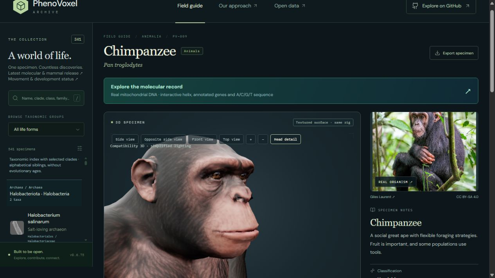

Two mammals. A new way to read their molecular records.
Red kangaroo and chimpanzee receive a replacement textured-body and movement pass and a new interactive molecular observatory. The DNA explorer uses versioned public nucleotide sequences and their deposited gene annotations. Its cinematic interface does not create biological evidence.
341 taxa retained · 0 new taxa · 2 animal records revised · 2 mitochondrial sequences
All 339 other species records, all 341 taxon/photo/occurrence identities, the original model registry and the retained source GLBs are preserved. Neither the deposited DNA nor its source annotations are modified by the viewer.
From a published sequence to a selectable helix.
Explore A, C, G and T
Rotate the local helix, select a nucleotide, inspect its complement, jump to a reference coordinate, navigate an annotated region, or search motifs on both strands. Forward and reverse-complement views retain the deposited coordinate system. RNA genes and noncoding intervals are not translated as proteins.
Follow a coding region
Inspect coding DNA, the corresponding RNA alphabet and a deposited protein translation. The 13 CDS translations in each record are reproduced with vertebrate mitochondrial genetic code 2. Reverse-strand ND6, alternate initiation and incomplete terminal codons are handled separately. Source stop-codon exceptions remain visible.
Test a hypothetical substitution
Preview substitutions in an explicitly labeled local sandbox. See the affected codon and its code-table decoding, reset edits or download a separately labeled hypothetical FASTA. Reference FASTA exports always contain the original sequence. This exercise does not predict expression, structure, animal traits or health.
Use documented records
Source accessions, exact taxon IDs, dates, annotations, sequence hashes, FASTA and GenBank downloads remain accessible. No network call or account is required to browse the bundled records. This is a reference-sequence explorer, not a sequencer, read aligner or experimental assay.
Both are circular mitochondrial records. The linear feature map has an explicitly marked origin; the displayed helix is a local window, not a reconstruction of whole mitochondrial packing. These records do not represent the complete nuclear genomes or the genotypes of the pictured or rendered individuals. The kangaroo record title retains the historical name Macropus rufus; its current NCBI organism is Osphranter rufus.

Actual browser view of the local helix, base inspector and sequence controls. Interface and schematic by PhenoVoxel Archive.

Chimpanzee uses its own accession and coordinates. It is not a recoloring of the kangaroo sequence.
Replacement textured bodies and bound movement.
Red kangaroo
A licensed Stephengury kangaroo replaces the earlier plain artist sculpture. Nine original embedded image payloads and their UVs remain intact. The website preserves source pigment and dark eyes, uses dielectric materials, normalizes the body and tail proportions and adds a bound 27-joint movement rig.
Slow tail-assisted travel, paired hopping and supported search/repose retain the same textured body. Source maps range from 32×64 to 512×512 pixels: extreme zoom still reveals their resolution limit. Generic source species, sex and proportions require specialist review.
A licensed iRahulRajput body replaces the earlier simplified face and untextured sculpture. Its original 4096×4096 image and UVs are retained. T-pose arms are reshaped into a relaxed neutral placement before binding one shared 22-joint display skeleton. A collective hand-curl morph and bounded shoulder pose correction accompany knuckle-walk and supported search; seated repose uses the same surface. Individual digit biomechanics remain unsupported.
The uploader labels this source Generated with AI. Its detailed artist texture is not a photograph or scan of a measured chimpanzee. Anatomy, individual digits, coat geometry, skin optics and full musculoskeletal function remain approximate.
Actual browser view of the credited textured kangaroo. This is an artist reconstruction, not a photographed or measured specimen.

Actual browser view of the 4k artist-textured chimpanzee. Source is labeled AI-generated; the independent nucleotide record is documented separately.
Scientific scope. Ground support, finite transforms, retained UV/image payloads, shared weighted surfaces and exact neutral reset are software properties. The models are not independently validated anatomy, biomechanics or complete physiology. Material detail improves visual inspection but does not certify photographic equivalence. DNA is not used to invent either animal’s appearance or behavior.
These source GLBs are unrigged; the website adds the disclosed body normalization and skeleton. The archive’s Export specimen control produces the current credited pose with its surface and bound skeleton. Original legacy model payloads and registry entries remain available unchanged.
AlphaGenome, AlphaFold and sequence databases serve different roles.
NCBI Nucleotide and ENA provide deposited nucleotide records and annotations. They are the sequence evidence for this explorer.
AlphaGenome / AlphaGenome Atlas provides regulatory predictions; the Atlas concerns human genomic substitutions. Its predictions are not presented here as validated kangaroo or chimpanzee effects.
AlphaFold Protein Structure Database contains predicted protein structures. No arbitrary structure is assigned to either animal or its hypothetical substitutions; sequence, taxon and prediction confidence must be matched before structural interpretation.
NCBI genetic code 2 supports the mitochondrial decoding examples. A codon change alone does not establish gene expression or organismal function.
Sequences retrieved 4 November 2026 from NCBI E-utilities with accession-version and exact taxon checks. All 26 deposited protein translations match local decoding. Checks cover reference hashes, one-based coordinates, reverse complements, overlapping motif matches, immutable source data, labeled sandbox exports and exact historical reversal. The downloaded reference FASTA was also compared with the bundled sequence.
Original reference photographs remain separately licensed: kangaroos by PotMart186; chimpanzee by Giles Laurent, both CC BY-SA 4.0. They are references, not texture atlases or the sequenced specimens. The screenshot evidence is from software compatibility rendering; independent WebGL performance and biological certification are not established.